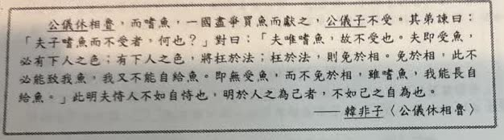
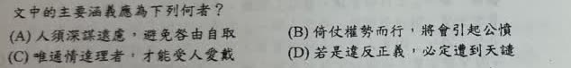

分享原卷｜第17題
完整原題
作答所需文章／材料
公儀休相魯，而嗜魚，一國盡爭買魚而獻之，公儀子不受。其弟諫曰：「夫子嗜魚而不受者，何也？」對曰：「夫唯嗜魚，故不受也。夫即受魚，必有下人之色；有下人之色，將枉於法；枉於法，則免於相。免於相，此不必能致我魚，我又不能自給魚。即無受魚，而不免於相，雖嗜魚，我能長自給魚。」此明夫恃人不如自恃也。明於人之為己者，不如己之自為也。 ——《韓非子〈公儀休嗜魚〉》文中的主要涵義應為下列何者？
(A) 人須深謀遠慮，避免咎由自取
(B) 倚仗權勢而行，將會引起公憤
(C) 唯通情達理者，才能受人愛戴
(D) 若是違反正義，必定遭到天譴
先想一想，再查看答案、解說與原圖
原卷作答：C（原卷紅筆訂正A）
正確答案：A，人須深謀遠慮，避免咎由自取。
逐項解析
| 選項與原句 | 判讀 | 句意與判斷理由 |
|---|---|---|
| (A) 人須深謀遠慮，避免咎由自取 | 應選 | 公儀休預見受禮、枉法、免官的長遠後果，選擇清廉自持避免自招禍害。 |
| (B) 倚仗權勢而行，將會引起公憤 | 不選 | 公儀休正因不願受制送禮者而拒收，本文不以公憤為主要後果。 |
| (C) 唯通情達理者，才能受人愛戴 | 不選 | 本文重點是受禮的利害與自恃，不是受人愛戴的條件。 |
| (D) 若是違反正義，必定遭到天譴 | 不選 | 原文說可能違法遭免官，沒有天譴的敘述。 |
詳細說明與解題步驟
【全段白話】
公儀休擔任魯國國相，很喜歡吃魚。全國的人爭相買魚送他，他卻不收。弟弟問：「您喜歡吃魚，為什麼不收？」
他說：「正因為喜歡，才不收。接受魚，就難免有受制於人、迎合人的態度；如此便可能違反法令；違法就會被免官。被免官後，別人未必還送魚，我自己也無力供應。如果不收魚，就不會因此被免官，雖然喜歡吃魚，也能長久靠自己買來吃。」這說明依賴別人不如依靠自己，盼別人替自己做，不如自己去做。
【看清原文的因果鏈】
收魚 → 遷就送禮者 → 可能枉法 → 免官 → 失去長久自行買魚的能力。公儀休不只看眼前的小利，而能預想長遠後果，避免因自己貪取而惹禍，因此選A。
不是握有權勢就應引人仇恨，也不是討人喜愛便必受愛戴。失去官位是現實的法令與職位後果，並非原文說違反正義就受天譴。
核對註記：已依原卷或完整文字核對並獨立解題；對應教材課次未確認，歸綜合。
原圖（僅本題）

